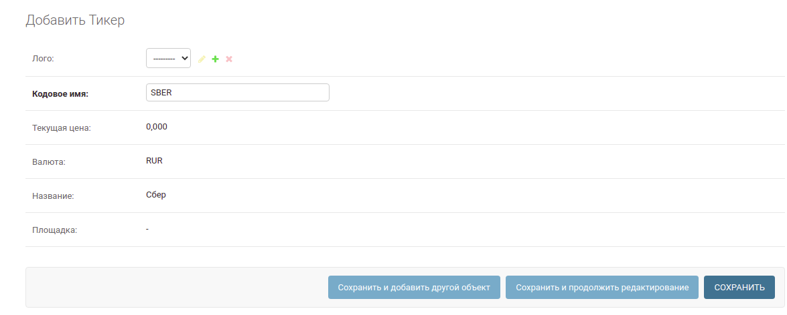
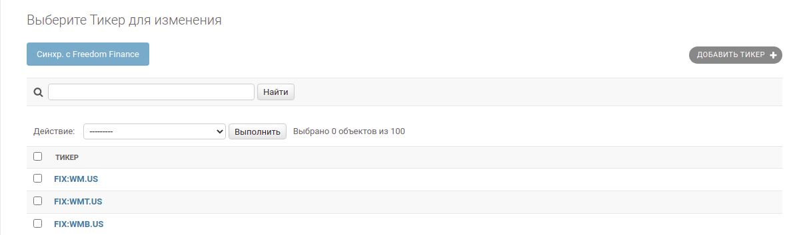
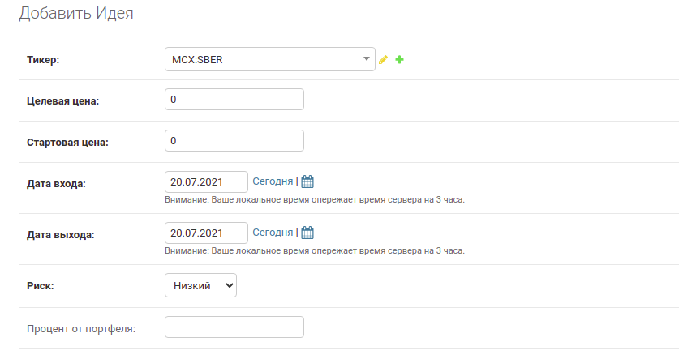
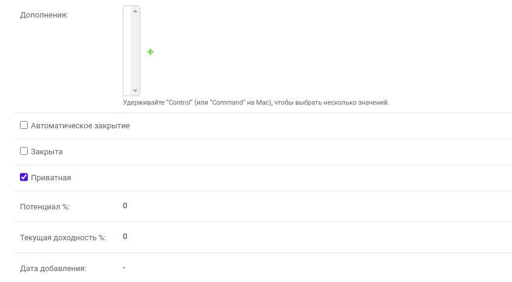
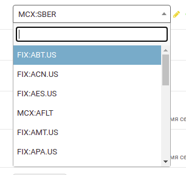
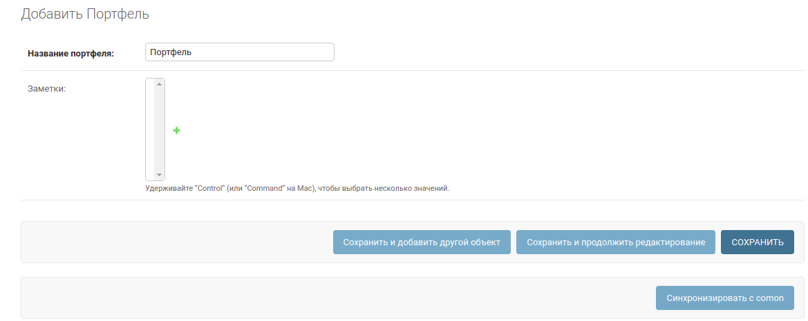
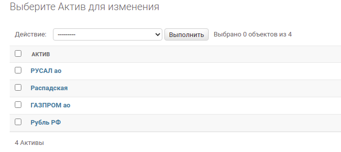
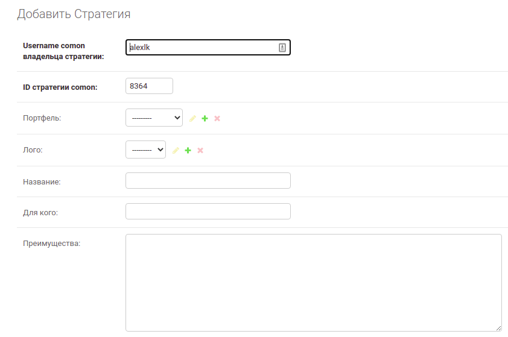
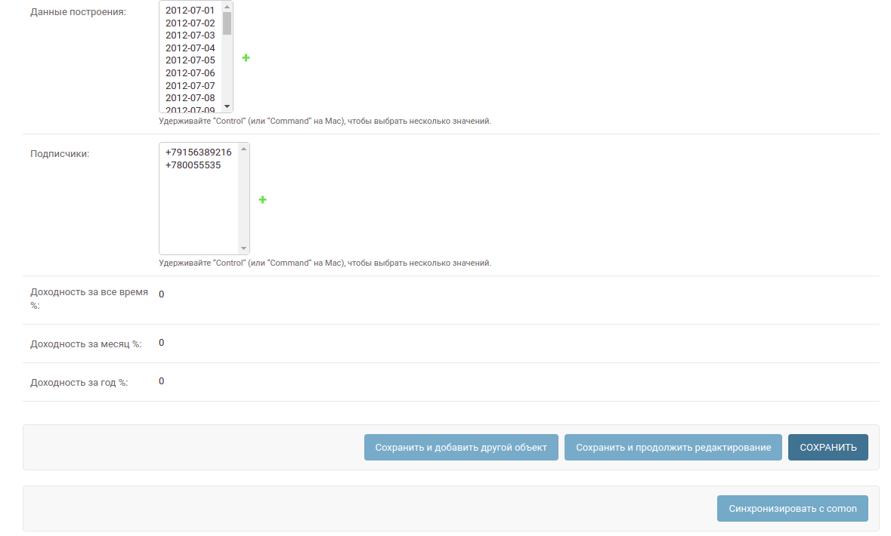
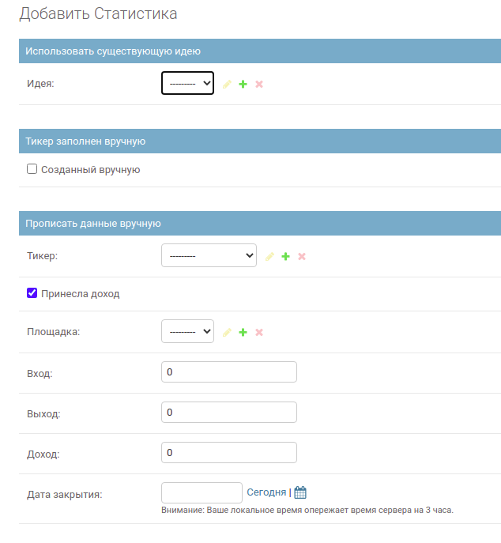

Наполнение контентом¶
Тикеры¶
Добавление тикера¶
Переходим на страницу создания тикера
К заполнению доступны 2 поля - Лого и Кодовое имя. Все остальные подтянутся автоматически (цена, валюта, название, площадка). Обязательное поле к заполнению только Кодовое имя. Ориентируясь на него, мы сможем получать актуальные данные с Freedom Finace.
Caution
Кодовое имя должно быть уникальным в рамках уже созданных на нашей стороне тикеров. В противном случае тикер не создастся
Вводим к примеру “SBER” и нажимаем Сохранить
Если тикер есть у Freedom, то появится и у нас:
Поле Лого устанавливаем сами
Массовая синхронизация тикеров с Freedom Finace¶
Note
В самом Freedom Finance имееются данные более чем 1.5M тикеров. Выкачивать их все не целособразно, поэтому для старта можно получить только самые популярные по их версии, не прибегая к ручному наполнению.
Переходим в раздел Тикеры
Жмем на Синхр. с Freedom Finance сверху на панели. Автоматически подтянутся около 300 тикеров.
Note
Сама функция не несет большого сакрального смысла, это может пригодится при стартовом разворачивании проекта - когда нужно получить много нужных нам тикеров. Список кодовых имен тикеров можно сформировать отдельно, не опираясь на данные Freedom Finance
Идеи¶
Создание идеи¶
Переходим на страницу создания идеи
 Обязательные к заполнению поля выделены жирным.
Связываем идею с тикером через выпадающий список поля Тикер. С помощью этого меню можно найти нужный тикер либо по кодовому имени (SBER ex), либо по названию (Сбербанк ex):
Заполнив - нажимаем Сохранить.
Note
Поля “Потенциал” и “Текущая доходность” высчитываются автоматически после сохранения, основываясь на значении “Текущая цена” тикера, а также “Целевая цена” и “Стартовая цена” самой идеи
Note
Чек-бокс напротив “Автоматическое закрытие” заставит идею перейти в статус “Закрыта” в день, указанный в поле “Дата выхода”
Note
Чек-бокс напротив “Приватная” скроет идею от публичного просмотра, став доступной только обладателям подписки. Если чек-бокс не стоит - идея доступна всем
Портфель¶
Создание¶
Переходим на страницу создания портфеля.
Вводим название - нажимаем Сохранить
Созданный портфель автоматически свяжется с тем портфелем, который используется в интеграции с Comon.
Для этого нажимаем Синхронизировать с comon в нижней части панели. Синхронизация сделанным таким образом - ручная, в дальнейшем это будет происходить на автоматической основе с заданной регулярностью
Note
Синхронизация может занять некоторое время ( не больше минуты) т.к. используется не классический способ парсинга, а инстанцирование реплики бразуера, иммитируещего поведение пользователя
Раздел с активами пополнится записями, синхронизированными с comon:
Стратегии¶
Создание стратегии¶
Переходим на страницу создания стратегии
 Обязательно заполняем поля “Username comon владельца стратегии” и “ID стратегии comon”. Они нужны чтобы однозначно связать сущность с теми данными, которые есть у comon.
Note
Откуда их брать?
К примеру, найдем на comon стратегию “Сибирский Клуб Инвесторов”. Ее ссылка имеет следующую анатомию:
https://www.comon.ru/user/alexlk/strategy/detail/?id=8364,
где alexlk - имя владельца, а 8364 - id
Note
Созданная таким образом стратегия позволит получать данные с comon.ru
Далее, выбираем из выпадающего списка нужный нам портфель. Нажимаем Сохранить, а затем Синхронизировать с comon в нижней части панели.
Note
Синхронизация требует не больше минуты
Note
Синхронизация автоматически подтянет данные построений для графика, а также значения доходности
Статистика¶
Создание отдельной записи¶
Переходим на страницу создания статистики
- Существует два варианта создания статистики:
Используя данные существующей идеи
Внеся данные вручную
Первый вариант: Нужно выбрать идею из выпадающего списка. И все.
Note
Идея должна быть закрытой, чтобы оказаться в статистике
Второй вариант: тикер выбирать не нужно. А надо заполнить все остальные поля ввода. В том числе поставить чек-бокс напротив “Созданный вручную”
Note
На фронте не будет ссылки на такую идею из таблицы стататистики
Жмем Сохранить